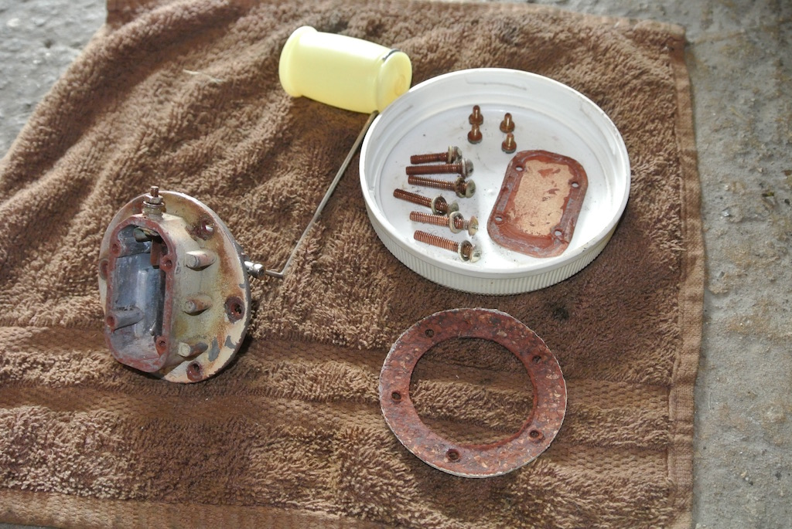
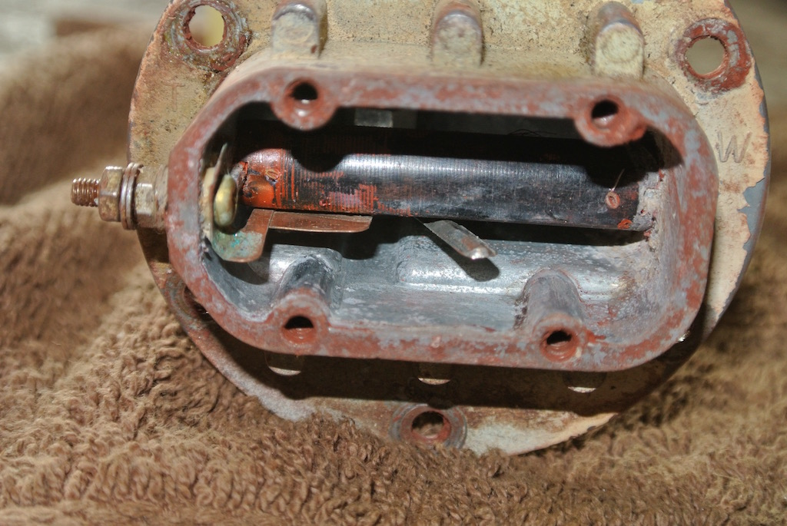
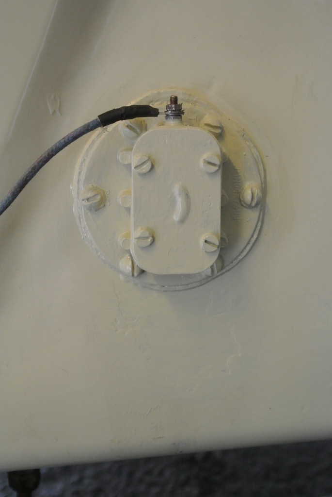

Leaking Tank Sender Unit
 For a few weeks I'd noticed a stain below the sender unit near the bottom of the tank. It was clear that petrol was leaking from the unit, however, nearly two weeks ago I started smelling petrol when I was near the car. So I removed the spare wheel carrier, syphoned enough of the petrol from the tank to bring the level well below the sender (leaving about one gallon in the tank), disconnected the battery and removed the unit from the tank. An article in the October 2013 issue of Totally T-Type on a leaking TD fuel tank sensor gave some background to the details of the unit.
For a few weeks I'd noticed a stain below the sender unit near the bottom of the tank. It was clear that petrol was leaking from the unit, however, nearly two weeks ago I started smelling petrol when I was near the car. So I removed the spare wheel carrier, syphoned enough of the petrol from the tank to bring the level well below the sender (leaving about one gallon in the tank), disconnected the battery and removed the unit from the tank. An article in the October 2013 issue of Totally T-Type on a leaking TD fuel tank sensor gave some background to the details of the unit.
I then removed the cover plate and ordered a new circular cork gasket from the Octagon Club. You can't buy the gasket under the cover plate, so I used the plate as a template and cut one from a sheet of gasket paper. I found that sharpening the end of a brass tube using a countersink bit made a good tool for cutting holes in the paper gasket.
Having cleaned up the surfaces with wire wool I cleaned off as much paint as possible and, with a multi-meter, checked that as the float moves so the contact inside the unit made an electrical connection. You can see in the photo that, as the float drops, the lever simply moves a copper strip until it makes contact with another piece of copper, completing the circuit and turning on the dashboard warning light. An earth connection is made through the bolts that hold the unit to the tank. The black bakerlite tube looks as though it once had a coil of wire wrapped around it so that the sender unit could provide a variable signal, rather than the on/off switch.
The unit will fill with petrol through the lever entry point, so the cover plate gasket needs to be a good seal as well as where the unit fits into the tank. Being a hydrocarbon, petrol has no free electrons and so is an insulator. I used Hylomar Blue on each surface and on the threads of the bolts.
Having refitted the unit I put the petrol back in the tank and left it for a couple of hours to check that there were no leaks. I also checked that the warning light went out as the level increased. Then, using a small brush, I painted the unit and the area of tank below the unit with one coat of grey primer and two coats of colour from the tin that came with the car.
It seems that the previous owner also replaced the cork gasket between the unit and the tank. I just have to hope that the Blue Hylomar, which does not set and is fuel resistant, will help maintain the seal.
Return to MG TC4985© David James 2016 Last updated: 4th August 2016